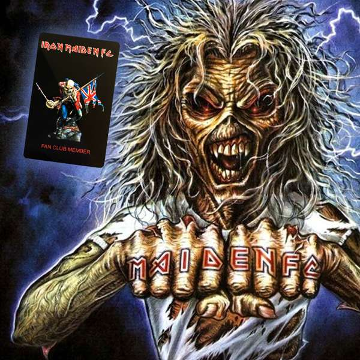

Iron Maiden
Iron Maiden are an English heavy metal band formed in Leyton, East London, in 1975 by bassist and primary songwriter Steve Harris. The band's discography has grown to thirty-nine albums, including sixteen studio albums, twelve live albums, four EPs, and seven compilations.
Pioneers of the new wave of British heavy metal, Iron Maiden achieved initial success during the early 1980s. After several line-up changes, the band went on to release a series of UK and US platinum and gold albums, including 1982's The Number of the Beast, 1983's Piece of Mind, 1984's Powerslave, 1985's live release Live After Death, 1986's Somewhere in Time and 1988's Seventh Son of a Seventh Son. Since the return of lead vocalist Bruce Dickinson and guitarist Adrian Smith in 1999, the band has undergone a resurgence in popularity,[2] with their 2010 studio offering, The Final Frontier, peaking at No. 1 in 28 countries and receiving widespread critical acclaim. Their sixteenth studio album, The Book of Souls, was released on 4 September 2015 to similar success.
Despite little radio or television support,[3] Iron Maiden are considered one of the most successful heavy metal bands in history, with The Sunday Times reporting in 2017 that the band have sold over 100 million copies of their albums worldwide.[4][5] The band won the Ivor Novello Award for international achievement in 2002. As of October 2013, the band have played over 2000 live shows throughout their career. For 40 years the band have been supported by their famous mascot, "Eddie", who has appeared on almost all of their album and single covers, as well as in their live shows.